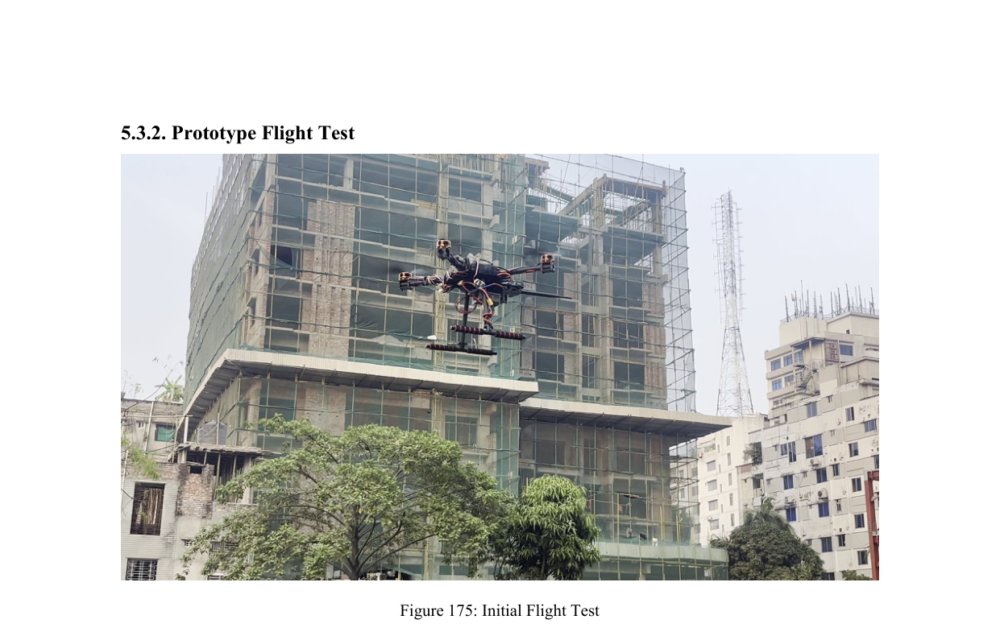

Embedded Systems & Robotics
Compute that moves: autonomous platforms, CubeSat avionics, and microcontroller systems where the design constraints are joules, bytes, and grams, all at once.
Overview
Embedded engineering is what happens when you take everything else and force it through a 32-bit microcontroller, a 2 W power budget, and a bus on the other side of a satellite. It rewards designs that respect their constraints and punishes anything that doesn't.
The work here spans autonomous flying platforms, planetary rovers, quadruped mechanisms, and CubeSat avionics: different bodies, but the same underlying problem of sensing, deciding, and acting without dropping a frame.
Sub-areas
- Autonomous Navigation (SUB-01): Locomotion algorithms and control laws for aerial and ground platforms, closing the perception-planning loop on-board.
- CubeSat Avionics (SUB-02): EPS, OBC, comms, and ADCS subsystems sized for the bus, the orbit, and the team building it.
- Sensor Fusion (SUB-03): IMU, sun-sensor, and camera streams combined into pose estimates that survive resource budgets and noise.
- Real-Time Data Pipelines (SUB-04): Embedded data paths from sensor → processing → telemetry with bounded latency and predictable behaviour.
- Microcontroller Integration (SUB-05): System integration on resource-constrained MCUs, covering peripherals, scheduling, and power-aware firmware.
- Mechanical Co-design (SUB-06): Working alongside structural teams on quadruped mechanisms, CubeSat enclosures, and payload accommodation.
Related Projects

Autonomous Aerial Survey
Autonomous drone pipeline combining flight simulation, image processing, and survey automation.
APSCO CubeSat 3U Mission
End-to-end 3U CubeSat with EPS, OBC, comms, ADCS, antenna and ground station developed through 3D, PCB, and orbital simulation.
BIRDS-X APRS Payload
APRS payload focused on energy-transition messaging. Phase 1 winner of the national BIRDS-X space payload competition.
Toolchain
| MATLAB / Simulink | Control law design, sensor-fusion prototyping, and simulation-in-the-loop. |
| ROS / PX4 | Autonomous drone platform development and simulation. |
| Proteus / LTSpice | Mixed-signal embedded validation before hardware spin-up. |
| SOLIDWORKS / Fusion 360 | Mechanical accommodation and structural design alongside electronics. |
| KiCad / Altium | PCB design for payload, OBC, and ground-station hardware. |